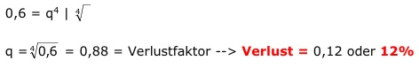

Aufgabe 193 Jeans werden schon beim Neukauf ausgewaschen angeboten. Bei jedem Waschgang verlieren sie 10% der Farbe. Wie oft muss eine Jeans gewaschen werden, wenn noch 60% der ursprünglichen Farbe vorhanden sein sollen? Wie viel Prozent der Farbe müsste sie verlieren, wenn dafür 4 maliges Waschen reichen soll? Nach einem Waschgang haben die Jeans noch 90% der Farbe. Verlustfaktor = 0,9 0,6 = 0,9n Logarithmieren: lg 0,6 = lg 0,9n lg 0,6 = n * lg 0,9 | :lg 0,9 lg 0,6 - 0,2218 n = ---------- = ------------ = 4,9 Jahre lg 0,9 - 0,0458 --> 5 mal Waschen 